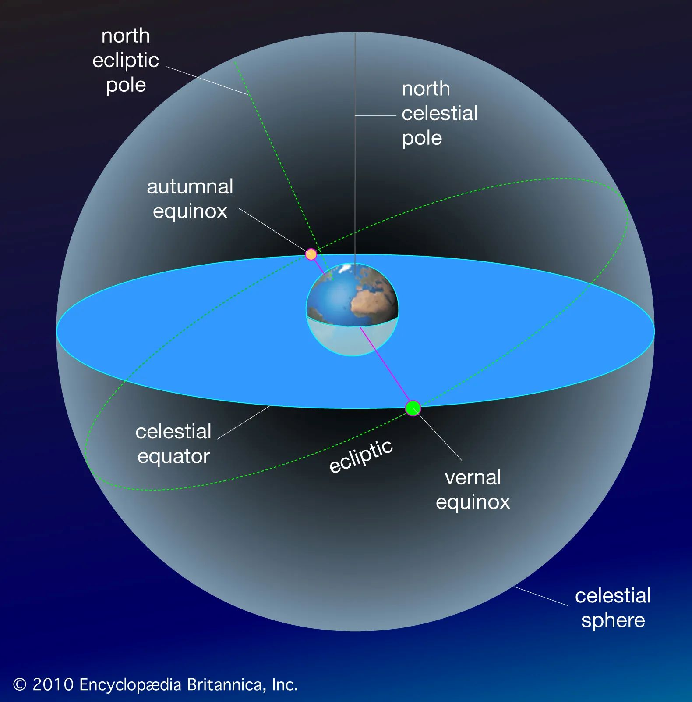

We have just passed the autumn equinox, that quiet hinge in the year when summer gives way to fall and the balance of light begins to tip toward darkness. The change is subtle at first. A morning arrives a little later. The afternoon seems to disappear sooner. Shadows lengthen across the garden, and the light that once lingered late in the kitchen starts slipping away before dinner.
The equinox is often described as the day when day and night are exactly equal. It is a beautiful idea, and almost right — but astronomy is a little more particular than the phrase suggests. An equinox is actually a precise moment: the instant when the center of the sun crosses Earth's equatorial plane. It happens twice each year, in March and September.
At the March equinox, the sun crosses that plane moving northward. In the Northern Hemisphere, astronomical spring begins. At the September equinox, the sun crosses it moving southward, beginning astronomical autumn here and spring in the Southern Hemisphere. The names change with the hemisphere; the celestial event does not.

The word itself comes from the Latin aequus, meaning equal, and nox, meaning night. But the “equal” part deserves an asterisk. Day and night are very nearly equal around an equinox, not perfectly so. The sun is a disk rather than a point of light, and Earth's atmosphere bends sunlight near the horizon. Those two effects give most places a few more minutes of daylight than darkness on the actual equinox. The exact dates when a particular place experiences twelve hours of daylight and twelve hours of night — called the equilux — depend on latitude.
That small distinction is worth knowing because it changes the way we think about the equinox. It is not a perfectly balanced day standing still in the middle of the year. It is a turning point — a moment when the geometry of Earth and sun changes direction, and the seasonal pattern begins moving toward its next extreme.
People were watching that movement long before they had a word for equinox. The sun does not rise in exactly the same place on the horizon every morning. Across the year, its rising and setting points slowly travel north and south. The solstices mark the two extremes of that journey; the equinoxes fall between them, when the sun rises approximately due east and sets approximately due west.
For people living by daylight rather than by clocks, those movements offered a practical way to understand the year. Agricultural societies needed to know when seasons were changing, when planting or harvest was approaching, and how the amount of available daylight was shifting. The Metropolitan Museum of Art's account of ancient Egyptian timekeeping, for example, describes a calendar organized around agricultural seasons, while NASA notes that observing and predicting seasonal changes was among humanity's earliest astronomical skills.
But this is where it is important not to make the ancient world tidier than it really was. There was no single ancient understanding of the equinox, and there is no evidence that every prehistoric culture treated it as a sacred day of perfect balance. Different societies watched different celestial events for different reasons. Some built calendars around lunar cycles, some around agricultural seasons, some around the sun's position, and many combined several systems.
What they shared was attention. The sky was not background scenery. It was a clock, a calendar, a source of practical information, and sometimes a place where meaning was written into the landscape.
If we want a prehistoric monument with a documented relationship to the equinox itself, Ireland offers a particularly compelling example. At Loughcrew, a group of Neolithic passage tombs dating to around 3000 B.C., Cairn T is aligned to the sunrise at both the spring and autumn equinoxes. Heritage Ireland notes that, at these times, the first rays of the sun enter the tomb — a small but extraordinary piece of engineering and observation preserved across more than five thousand years.
There is something especially moving about that alignment because it is not an enormous spectacle. It is a beam of morning light arriving at a particular place at a particular time of year. The builders did not need a clock to know that the sun had returned to a familiar point. The landscape itself could tell them.
The human habit of marking the equinox did not disappear with prehistoric monuments. It continued through calendars, festivals, observances, and the simple practice of recognizing that the year has reached another seasonal hinge.
At Chichén Itzá, for example, the pyramid of Kukulcán produces a striking pattern of light and shadow around the equinoxes: a series of triangular shadows along the northern staircase can resemble a serpent descending toward the stone head at its base. NASA documents the phenomenon, and Mexico's National Institute of Anthropology and History continues to treat the equinox as an important astronomical event at the site.
The effect is worth including here because it belongs specifically to the equinox story, but it also illustrates why careful language matters. The light-and-shadow phenomenon is real; claims about exactly what the ancient Maya intended, and how the effect was understood in its original context, require more caution than the familiar modern story sometimes suggests.
The equinox also has a life beyond stones and astronomy. Across cultures, the arrival of spring has often been associated with renewal, and the arrival of autumn with harvest, gathering, preparation, and the beginning of a darker half of the year. Those traditions do not all descend from one ancient equinox festival, and they should not be flattened into a single story. They are different responses to a shared seasonal reality.
Nowruz is one of the clearest living examples of a spring celebration tied to the astronomical turning of the year. UNESCO describes the festival, observed across a wide region of Asia and the Middle East, as a traditional spring celebration associated with nature, the sun, renewal, goodwill, and the beginning of a new year. Its date is rooted in astronomical calculation.
Traditions surrounding the equinox vary widely, but the underlying impulse is familiar: to notice that the relationship between light and darkness has changed, and to give that change a place in the human calendar.
Here at home, we experience the equinox in much smaller ways. The sun begins to enter rooms at a different angle. The patch of afternoon light moves farther across the floor. Plants that seemed perfectly happy in a bright summer window suddenly have to make do with less. The garden changes pace. Dinner happens a little earlier. A sweater appears on the back of a chair.
None of these things is the equinox itself. They are the human-scale consequences of living on a tilted planet as it moves around the sun.
That may be the most useful way to think about the equinox: not as a day when the world magically balances itself, but as a marker of transition. The light has reached a particular point in its annual journey, and from here it keeps moving.
In spring, the movement carries us toward longer days and the growing season. In autumn, it carries us toward shorter days, longer nights, and the quieter work of gathering in. The celestial event is precise. Our response to it can be wonderfully human.
We can simply notice.
Open the curtains. Look at where the morning light lands. Watch the sunset move along the horizon. Notice the first evening when darkness arrives before you expect it.
The year has turned again.